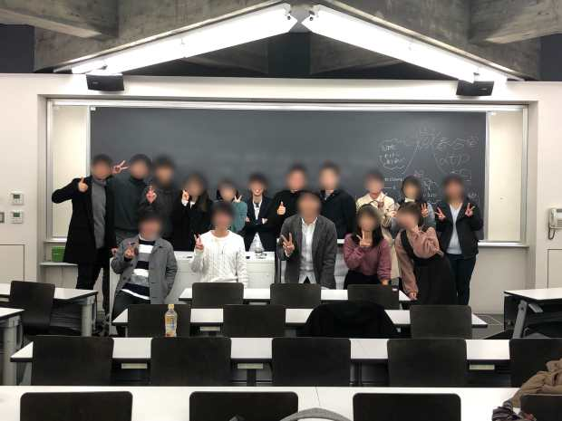

Discussion
Discussionとは
Discussionは、5〜6人のグループで１つのトピックについて深く話し合う活動です。それぞれの価値観を共有し合い、よりよい結論を導きます。日本人相手で勝ち負けもないため、比較的英語も聞き取りやすく、高度な英語技術を求められないので英語に慣れるよい機会になります。
普段は火・水・金曜日（火・水は隔週、金曜は毎週）の5限後18時半〜20時の時間帯に我々WRESSのメンバーだけで１つのトピックに対してDiscussionをしています（通称: デイリー）。
役割
- TL（テーブルリーダー）…テーブルの司会者（1人）。話がズレたときや、話題の転換はこの人がメインに行う。
- TM（テーブルメンバー）…そのトピックについて話し合うテーブルのメンバー（4〜5人）。TLの人が投げた質問や話題に対して自分の意見を述べる。他のTMの人と異なる意見が出たとき、その違いを話せるとより楽しくなる。初心者でも比較的やりやすいのでこれを機に英語に慣れよう！

他大との交流
合同デイリー
普段は早稲田だけでデイリーの活動を行いますが不定期に他大学の方を呼んで合同デイリーを行います！ 参加大学は2〜4大学くらいです。違った価値観、考え方を持った方と1〜1.5時間Discussionをすることによってとても刺激を受けます。

他大ディス
不定期に休日を使って他大学主催の他大ディスに参加します。参加大学は10大学以上で、2〜2.5時間じっくりとDiscussionを行います。同じグループになった人とは、英語で自己紹介する機会した後、長時間Discussionするため、他大学に友達を作りやすいのが特徴です。Discussionの後は任意でレセプションパーティーに参加し、さらに交流を深めることができます。Discussionに参加したお土産として、そのテーブルメンバーとの記念写真とノベルティー（お菓子・文房具など）がもらえます。行けば行くほど溜まるので、あとで見返すのも楽しいです！

- お茶の水女子大学E.S.S.
- 中央大学英語学会
- 一橋大学国際部
- 東京大学E.S.S.
- 東京外国語大学ESS
- 東京理科大学神楽坂ESS
- 東京理科大学野田校舎英語研究会
- 東京女子大学英語会Q.G.S.
- 首都大学東京ESS
- 津田塾大学ESS
- 聖心女子大学E.S.S.
- 群馬県立女子大学ESS
主催Discussion
《早賢美茶》（6月）
お茶の水女子大学と合同で主催します。基本的に1年生はTM、2・3年生はTLとして参加します。

《WASEDA Discussion》（12月）
我々早稲田大学も12月に主催します。基本的にみんなTLを行うので、このDiscussionのためにたくさん練習します。これを機に英語を話す力がかなりつきます。